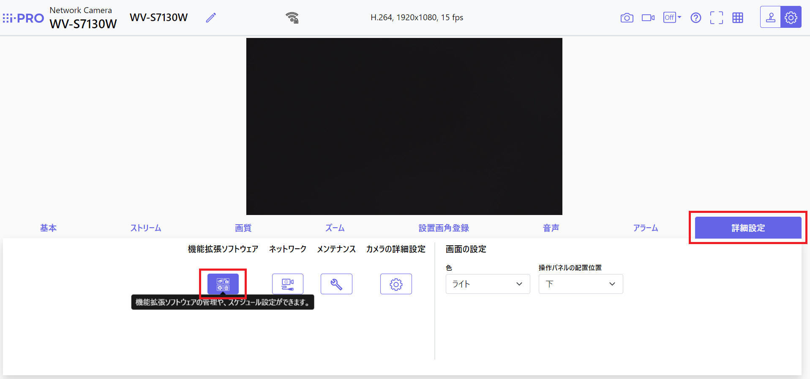
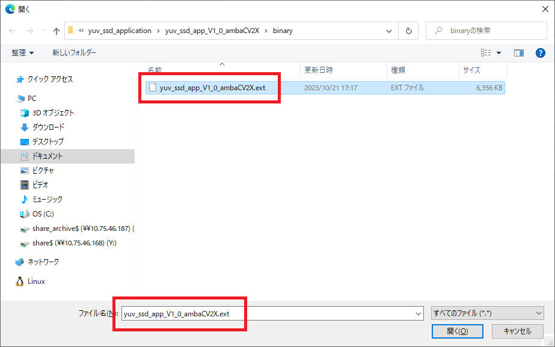
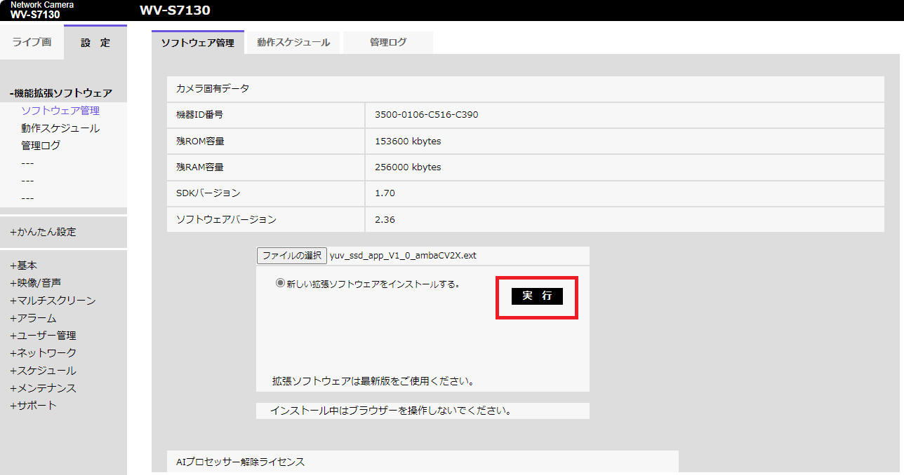
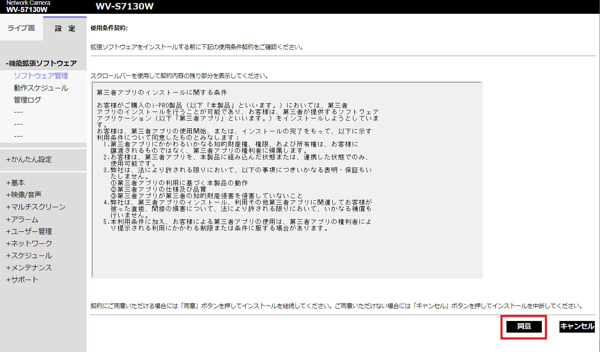
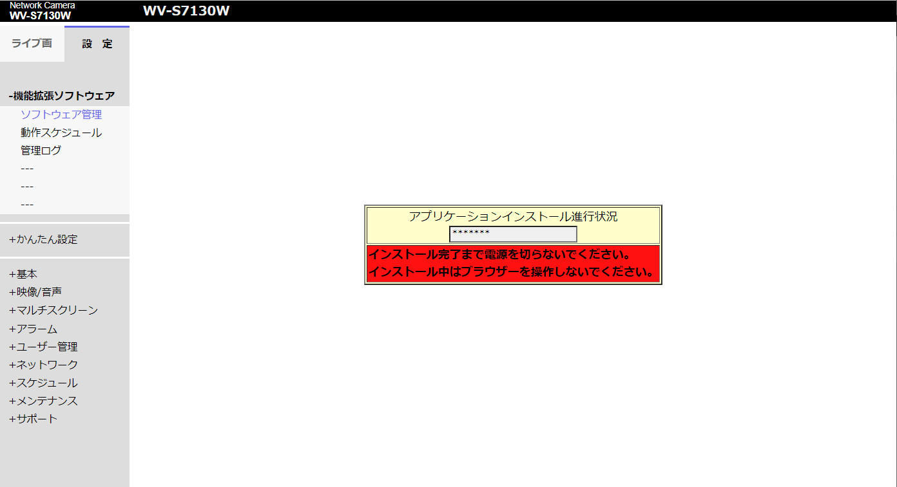
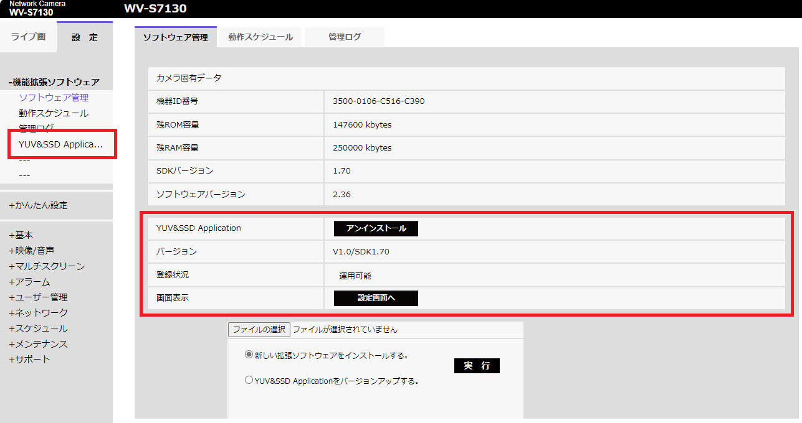
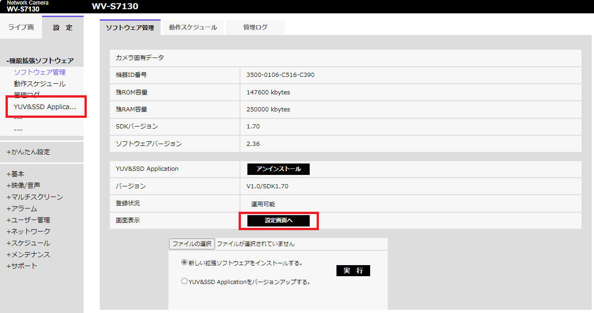
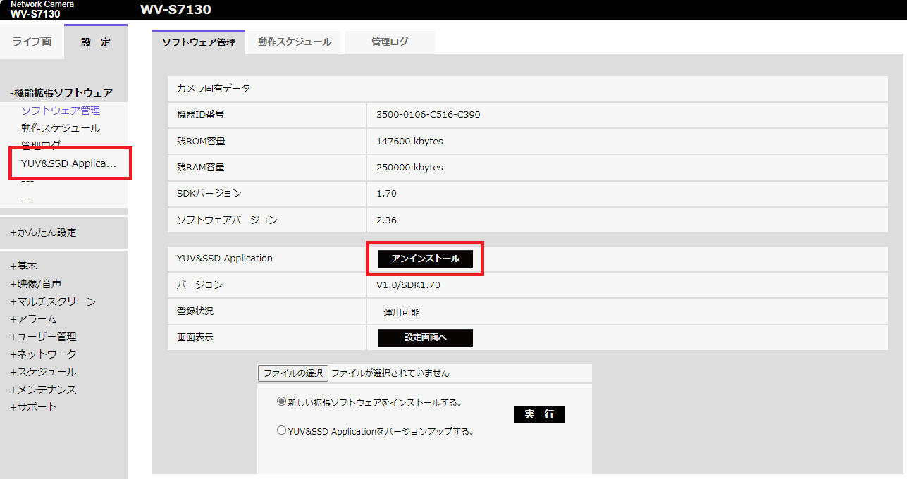

物体検知「YUV&SSD Application」
[概要]
本ページでは、"AIカメラSDK" に添付のサンプルアプリから「YUV&SSD Application」を紹介します。
「YUV&SSD Application」は、i-PRO カメラが写した映像で 20クラス
の物体を検知して画面上に表示するアプリケーションです。
[動作例]
本アプリは下記 20クラス の物体を検知します。
(1) "aeroplane"
(2) "bicycle"
(3) "bird"
(4) "boat"
(5) "bottle"
(6) "bus"
(7) "car"
(8) "cat"
(9) "chair"
(10) "cow"
(11) "diningtable"
(12) "dog"
(13) "horse"
(14) "motorbike"
(15) "person"
(16) "pottedplant"
(17) "sheep"
(18) "sofa"
(19) "train"
(20) "tvmonitor"
「YUV&SSD Application」についてその他詳細は「yuv_ssd_appの動作説明」を参照ください。
ヒント： 下記 "appPrefs.json" で定める "defaultValue" の "1" で１秒周期（1 FPS）を設定しています。
[appPrefs.json]
{
"preferenceVersion": {"major":"2", "minor":"1"},
"preference": [
{"prefName": "Resolution",
"prefType": "Enumeration",
"enumerationList": ["HD(1280x720)", "FHD(1920x1080)"],
"appApiAccess": "ReadWrite",
"webApiAccess": "ReadWrite",
"defaultValue": "FHD(1920x1080)"},
{"prefName": "FrameRate",
"prefType": "Integer",
"appApiAccess": "ReadWrite",
"webApiAccess": "ReadWrite",
"defaultValue": "1"},
]
}
[概要]
アプリ「YUV&SSD Application」を下記［Download］ボタンをクリックすることで入手できます。無償、無期限にてご使用いただけます。
※ ライセンス条件など詳細はダウンロードファイル添付の資料をご確認ください。
[環境]
下記 i-PRO カメラで動作確認を行いました。
動作未確認ですが、AI機能拡張アプリに対応する他の i-PRO カメラでも動作するはずです。
| 使用カメラ |
ファームウェア バージョン |
|
i-PRO mini 有線LANモデル (品番：WV-S7130UX)
i-PRO mini 無線LANモデル (品番：WV-S7130WUX)

|
Ver2.36 |
|
モジュールカメラ AIスターターキット
(品番：MK-DVASTNP01)

|
Version 2.00 |
下記SDKに添付のソースコードおよび環境を使ってアプリを作成しています。
| SDK バージョン |
備考 |
| V1.71 |
下記 i-PRO カメラ ファームウェア環境で動作します。
- Xシリーズ： V2.04 or later
- Sシリーズ： V2.30 or later
|
ファームウェアのバージョンが上記より古い場合、ダウンロード
- i-PRO サポートポータル から最新ファームウェアをダウンロードして更新することをご検討ください。
[概要]
i-PRO カメラへ機能拡張アプリをインストールする手順を記載します。
下記は "i-PRO mini" による実施例ですが、他の機種も概ね同じ手順です。ただし画面デザインなどは機種およびファームウェアバージョンにより異なる場合があります。
[手順]
［手順１］
使用する i-PRO カメラのIPアドレス、登録したユーザーIDとパスワードでブラウザ画面を表示し、［設定］ボタンをクリックします。

［手順２］
"詳細設定" タブ中にある "機能拡張ソフトウェア" をクリックします。

［手順３］
"ソフトウェア管理" から [ファイル選択] ボタンをクリックし、インストールするプログラムのファイル（*.ext）を選択します。
*.ext ファイルは本ページからダウンロードした zip ファイルを解凍することで入手できます。


［手順４］
インストールするアプリケーションを正しく選択できていることを確認し、［実行］ボタンをクリックします。

［手順５］
"使用条件契約" 画面を表示するので、内容を確認して問題なければ［同意］をクリックします。

［手順６］
アプリケーションのインストールを開始するので、終了まで画面を触らずに待ちます。

インストールを完了すると下図のような画面となり、「YUV&SSD Application」 をインストールできていることを確認できます。

[概要]
「YUV&SSD Application」 を起動する方法について説明します。
本アプリケーションで必要な設定はありません。
[手順]
［アプリケーション起動方法］
下図画面から下記いずれかをクリックすることで「YUV&SSD Application」を起動します。
(方法１) 画面左側「YUV&SSD Application」メニューをクリック
(方法２) 画面中央の［設定画面へ］ボタンをクリック

［アプリケーション終了方法］
アプリケーションを終了する場合、画面右上の［×］ボタンをクリックしてください。
[概要]
i-PRO カメラへインストールした機能拡張アプリをアインインストールする手順を記載します。
i-PRO カメラへインストールできる機能拡張アプリの数は通常2～3となっています。新しいアプリをインストールするために登録済みアプリをアンインストールする必要があるときにこの手順でアンインストールを行います。
[手順]
［ソフトウェア管理］画面からアンインストールするアプリケーションを探し、［アンインストール］ボタンをクリックします。

AIカメラSDKダウンロード、FAQなど技術情報の閲覧方法、について記載します。
SDK は本ページで紹介したアプリケーションのソースコードを含みます。アプリケーションにあなた独自の改造を行って使用することが可能です。詳細は各アプリケーション添付のライセンス情報などをご確認ください。
変更履歴
| 2023/12/6 |
- |
新規作成, |
崎戸梨恵 木下英俊 |
i-PRO - Programming Items トップページ
プライバシーポリシー